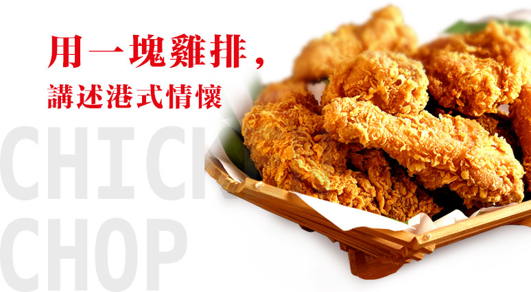
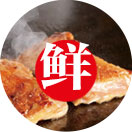
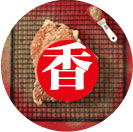
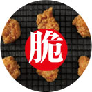
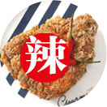
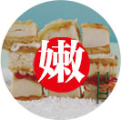
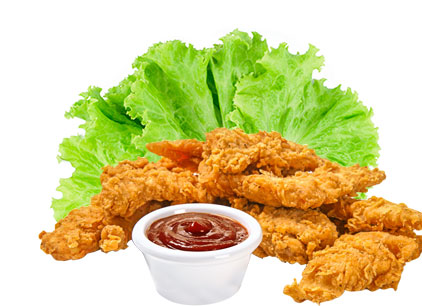

白羽正新，源自香港九龍城，傳承港式美食文化，選用優等白羽雞，採用極限去油膩工藝，搭配19種香料秘制而成獨門港式配方醬料，專注做營養健康、有人情味、有烟火氣的雞排。
Brand Story
1982年，家住香港九龙城寨的梁正新与妻子，开了家鸡排店，店名为「正新良品」鸡排，夫妇俩凭借真材实料和过硬的手艺，生意蒸蒸日上。梁正新并不满足眼前的成绩，他潜心研究鸡排配方，并远赴美国学习，最终研制出让鸡排「鲜辣香嫩脆」五味俱全的神奇配方。口感提升后，店里生意十分火爆，几十平的店子四季客满，门口常年排队，不少市民从湾仔、旺角等地赶去九龙城，只为一品梁氏夫妇的鸡排。梁氏夫妇宅心仁厚，深受街坊们爱戴，偶尔碰到经济拮据的街坊，通常都是慷慨相送，这一来，就是9年。
1991年，长期劳累的梁正新渐感身体不适，与爱人商量后决定关掉门店，二人移民加拿大疗养，关店的前一天，梁氏夫妇做好最后一批鸡排，挨家挨户的送给那些老街坊们，一来感谢他们这些年的支持，二来跟他们道个别。临走那天虽天降大雨，许多街坊们却相约来到机场，送别夫妇二人。之后的数年间，梁正新夫妇二人一直在国外静心疗养，而那家昔日热闹非凡的鸡排店，也几经转让，更在1993年的时候随着九龙城寨的拆除重建而消失不见。1997年，香港回归之后，这里逐渐出现了一些奶茶店、茶餐厅等，可「正新良品」却只能成为回忆。
2018年，家住上海的梁先生，收到叔叔梁正新的来信，他告诉梁先生，自己膝下无子，希望他能把鸡排继承起来，信中还附上了「正新良品」鸡排的详细制作方法和调料配方。梁先生不敢辜负叔叔的厚望，他深知凭一己之力难以撑起，于是找到知名餐饮企业——广州食盟企业管理有限公司，通过食盟公司的运筹布局，采用白羽鸡作为原料，工艺与配料完全遵照梁正新先生当年的做法，并将品牌更名为“白羽正新”，品牌一经推出，便获得了巨大成功。白羽正新不仅旨在为全国吃货奉上最正宗的港式鸡排，也为更多有志之士提供创富机会。
brand value
19種香料
秘制特調港式配方醬料
傳承經典
多年來刻苦研發
悉心培养的白羽鸡，饲养零激素
優質進口油，健康易吸收
熱油中炸，外表定型，溫油慢炸，雞肉熟透
脫油調味，將脂肪含量降到最低，狂吃不胖
-

甄选中国优等白羽肉鸡，采用当天新鲜的肉质烹饪，确保营养成分不流失。
-

从全球各地精选19种香料秘制而成的独门港式配方酱料。
-

采用马来西亚进口棕榈油，温油慢炸，保持表皮金黄酥脆。
-

上等江西赣州小米椒研磨成粉，辣味层层迸发。
-

源自香港九龙城的祖传手法腌制，保持又嫩又滑的口感。
- 
brand culture
有人情味，有煙火氣
It's human, it's firework
现代社会，
物欲横流，
人与人之间的信任，
脆如薄纸，
事不关己高高挂起随处可见，
人们都在感叹，
人情味越来越淡，
而饮食行业，
许多品牌盲目追求高大上，
与消费者的距离渐行渐远。
曾经的街巷，
已在城市重建中消失，
待到朝花夕拾时，
已为时过晚。
曾经我们踱步之间就能聆听到城市的呼吸，
大街小巷商贩们做买卖的吆喝声，
小吃店为了招揽食客在门口张罗起的热气和香味，
城市始终在变化，
只是我们很少走上街头。
但现在，
白羽正新却能让你品尝到从前的滋味
……
brand image